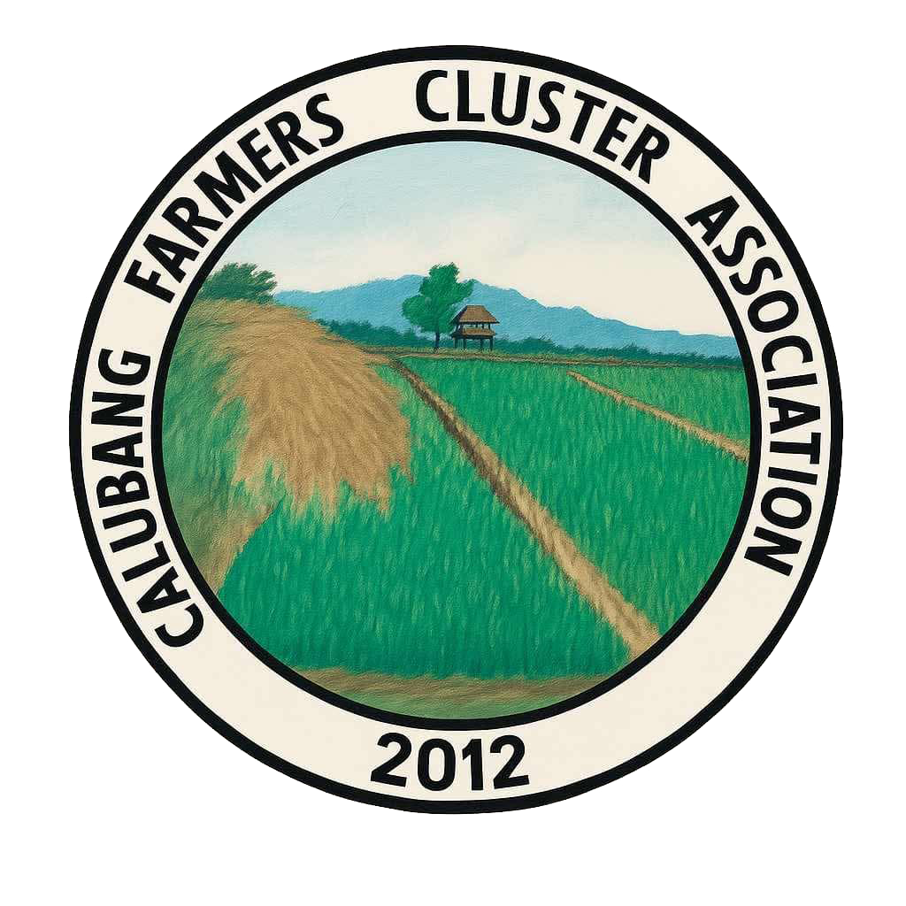

Login & Access
Accessing the system requires an authorized account to ensure association data remains secure and private.
-
1
Enable XAMPP
Open XAMPP Control Panel and then start Apache and MySQL.
-
2
Navigate to the Login Portal
Open your web browser and enter the URL for the CAFCA-MS Login
page (`CAPSTONE/CAFCA-MS/login/logindex.php`). -
3
Enter Credentials
Input your registered Administrator Username/Email and Password in the provided fields and click Login. If your credentials are correct, you will be securely redirected to the main dashboard.
Dashboard Overview
The Dashboard serves as the central hub of CAFCA-MS. Upon logging in successfully, you will be greeted by a summarized view of the association's current status.
-
Quick Statistics
View total registered farmers, machineries, on going schedules, completed schedules, and a calendar that shows the dates that has a schedule(s) at a glance without having to open individual modules.
-
Navigation Menu
Use the side panel to quickly switch between the Farmers, Machines, Schedules, and Records modules.
Managing Farmers
Maintain an accurate database of all cluster association members.
-
Adding a New Farmer
Navigate to the Farmers section and click "Add Farmer". Fill out the required personal details, farm size, and contact information, then submit to save them to the registry.
-
Editing Details
Locate the farmer in the list, click the Edit icon, update the necessary fields (such as phone number or farm size), and save the changes.
-
Deleting a Record
If a member leaves the association, use the Delete action. You will be prompted to confirm this action as it is irreversible.
Machine Inventory Management
Track the association's agricultural equipment, their availability, and usage history.
-
1
Registering Equipment
In the Machines module, click "Add Machine". Enter the machine name, description, and initial status.
-
2
Updating Machine Status & Returns
When a farmer's schedule is over, the machine they used will automatically be transferred to the "Completed" submenu where the admin can click the Return feature to mark it as available again for the next user.
-
3
Viewing Machine History
Click on the history icon next to a specific machine to see a log of who borrowed it and when it was borrowed.
Schedules & Certificates
Manage machine borrowing schedules and generate official documents.
-
Handling Requests
View incoming schedule requests from farmers. You can Add, Approve, Cancel, or Reschedule them based on the current inventory and machine availability.
-
Generating Certificates
Once a schedule is completed and a machine is returned, the system can generate a certificate. Use the Fetch Certificate feature to preview, and Print Certificate to create a physical or PDF copy for the farmer.
Records Management
Keep track of other essential association documents and administrative logs.
-
Managing Records
Access the Records module to view all general logs. Similar to the Farmers module, you can Add, Edit, and Delete records as necessary to maintain clean and organized bookkeeping.
-
Converting to Excel
The user can easily convert the table into an excel file by just clicking the Export Excel button beside the Add Record button.